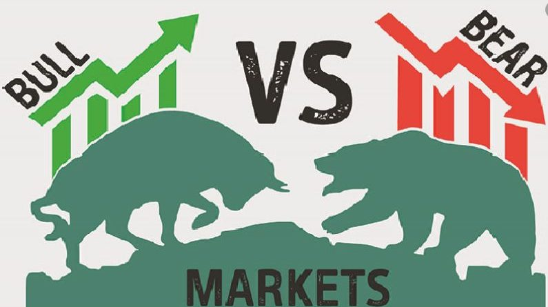

Understanding Stock Market Fundamentals
To be a successful investor, it’s important to understand some key concepts about how the stock market works.
The stock market is not just about buying and selling shares; it involves various factors that influence stock prices
and investment decisions.
1. What is a Stock?
A stock represents ownership in a company. When you buy a share of stock, you own a small portion of the company and may
have voting rights in major company decisions. Some companies also pay dividends, which are periodic payments to shareholders
as a share of the company’s profits.
2. Stock Exchanges & Market Movements
Stocks are traded on major exchanges such as:
- New York Stock Exchange (NYSE) – The largest and oldest stock exchange in the U.S.
- Nasdaq – A technology-focused exchange where many big tech companies like Apple and Microsoft are listed.
The stock market follows cycles of ups and downs, often referred to as:
- Bull Market 🐂 – A period when stock prices are rising, and investor confidence is high.
- Bear Market 🐻 – A period when stock prices are falling, often due to economic uncertainty.
3. Types of Stocks
Stocks can be categorized into different types based on their risk, return, and company characteristics:
- Blue-Chip Stocks: Shares of large, well-established companies with a history of stability (e.g., Apple, Microsoft).
- Growth Stocks: Companies expected to grow at a faster rate than the market, but often with higher risk (e.g., Tesla).
- Dividend Stocks: Companies that pay regular dividends to shareholders (e.g., Coca-Cola).
- Penny Stocks: Low-priced stocks with high risk and potential for large gains or losses.
4. The Role of Index Funds & ETFs
Instead of picking individual stocks, many investors prefer Index Funds or ETFs (Exchange-Traded Funds) to spread risk:
- Index Funds: These track a specific market index, like the S&P 500, which includes the 500 largest U.S. companies.
- ETFs: Similar to index funds but trade like stocks, allowing for easier buying and selling.
By investing in index funds or ETFs, beginners can benefit from diversification and lower risk compared to investing in individual stocks.
